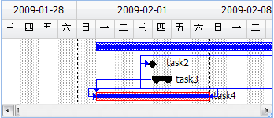
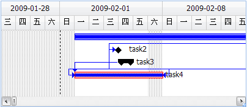

一个甘特图条形图区域，由以下几个常规显示部分组成：
1.任务条形图
2.项目日历背景
3.任务箭头连线
在前面“甘特图数据结构”教程中，我们可以通过任务的一些属性来控制任务条形图的显示样式，比如任务属性Critical为1则显示红色的关键任务，Summary为1显示为黑色两端箭头的摘要任务，Milestone为1显示为黑色菱形；任务的PredecessorLink前置关系数组用来显示任务与任务之间的箭头连线等。
那么如何控制甘特图的日历背景呢？
比如，有一个项目日历是这样的：星期1、星期3、星期5是工作日，其他是非工作日。
我们需要这样处理：
//甘特图项目日历背景 dataGantt.isWorkingDate = function(date){ var day = date.getDay(); if(day == 1 || day == 3 || day == 5) return true; else return false; }
效果图如下：

这里的关键在于控制Edo.data.DataGantt对象的isWorkingDate方法返回值，它接受一个日期参数，如果范围true，表示是工作日，甘特图会显示白色背景；如果返回false，表示是非工作日，显示灰色网格背景。
一个实际的项目日历可能是这样的：星期六、星期日是非工作日，其他星期天是工作日；可以定义一个日期范围为工作日，也可以把以人日期范围定义为非工作日。
我们来处理这样一个项目日历，代码如下：
//定义一个项目日历数据对象,规定了一些基本工作日与非工作日范围 /* type: 1为通用日期,0为例外日期 work: 1工作日,0非工作日 day: 星期日 0, 星期一 1... 星期六 6 */ var Calendar = [ {type: 1,work: 0,day: 0}, //星期日:非工作日 {type: 1,work: 1,day: 1}, {type: 1,work: 1,day: 2}, {type: 1,work: 1,day: 3}, {type: 1,work: 1,day: 4}, {type: 1,work: 1,day: 5}, {type: 1,work: 0,day: 6}, //星期六:非工作日 //从 2009年1月28日 到 2009年2月1号为非工作日 {type: 0,work: 0,start: new Date(2009, 0, 28),finish: new Date(2009, 1, 1)}, //从 2009年2月38 到 2009年2月18号为工作日 {type: 0,work: 1,start: new Date(2009, 1, 8),finish: new Date(2009, 1, 18)} ] dataGantt.isWorkingDate = function(date){ var day = date.getDay(); var time = date.getTime(); //先处理是否包含在例外日期中(例外日期优先级高) for(var i=0,l=Calendar.length; i<l; i++){ var d = Calendar[i]; //如果包含在例外日期范围中 if(d.type == 0 && time >= d.start.getTime() && time <= d.finish.getTime()){ return d.work; } } //后处理通用星期天逻辑 for(var i=0,l=Calendar.length; i<l; i++){ var d = Calendar[i]; //如果星期天一样 if(d.type == 1 && d.day == day){ return d.work; } } }
效果图如下：

本教程给出了一个规范的项目日历数据结构，用户可以扩展这个项目日历数据结构，为其构建一个项目日历调节设置面板，从而达到修改甘特图日历背景的目的。
相关示例： 甘特图的日历